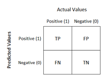

9 Evaluasi Data
9.1 Apa itu Evaluasi Model?
Merupakan salah satu tahap penting dalam proses machine learning yang memiliki tujuan untuk memastikan model dapat menghasilkan prediksi yang akurat.
9.2 Metrik Evaluasi
- Akurasi
- Presisi
- Recall
- F1-Score
- Confusion Matrix
9.2.1 Akurasi
Merupakan metrik yang mengukur sejauh mana model dapat melakukan prediksi dengan benar.
Formula atau rumus akurasi yaitu
Semakin tinggi nilai akurasi, maka semakin baik model tersebut.
Seberapa Penting Nilai Akurasi
- Akurasi dapat digunakan untuk mengevaluasi perfoma sebuah model
- Akurasi memberikan gambaran seberapa baik model yang digunakan secara keseluruhan
- Dengan nilai akurasi, dapat mengetahui seberapa akurat dalam memprediksi kelas data.
Kelebihan dan Keterbatasan Akurasi
- Akurasi memiliki kelebihan sebagai matrik evaluasi yang sederhana dan sangat mudah dimengerti.
- Keterbatasan akurasi dalam mengatasi ketidakseimbangan kelas pada sebuah dataset.
Pahami Code berikut
Perhatikan contoh code di bawah, kira-kira menghasilkan nilai Akurasi berapa persen?
Anda dapat mencoba code di samping menggunakan dataset yang berbeda, lalu fahami dan lihat nilai Akurasinya.
Pada dataset yang digunakan, dibagi menjadi 80:20 pada tahap split data. Selanjutnya menggunakan algoritma KNN dengan nilai K=3. selanjutnya akan dilakukan prediksi pada data uji dan akurasi model yang dihitung dengan membandingkan hasil prediksi dengan label sebenarnya pada data uji menggunakan fungsi “accuracy_score”
# Impor library yang diperlukan
from sklearn.datasets import load_iris #dataset dari sklearn
from sklearn.model_selection import train_test_split
from sklearn.neighbors import KNeighborsClassifier
from sklearn.metrics import accuracy_score
# Muat dataset Iris
#dapat dirubah menggunakan dataset yang lain
iris = load_iris()
X = iris.data
y = iris.target
# Bagi data menjadi data latih dan data uji
X_train, X_test, y_train, y_test = train_test_split(X, y, test_size=0.2, random_state=42)
# Inisialisasi model K-Nearest Neighbors (KNN) dengan k=3
model = KNeighborsClassifier(n_neighbors=3)
# Latih model menggunakan data latih
model.fit(X_train, y_train)
# Lakukan prediksi pada data uji
y_pred = model.predict(X_test)
# Hitung akurasi model dengan membandingkan prediksi dengan label sebenarnya pada data uji
accuracy = accuracy_score(y_test, y_pred)
# Tampilkan hasil akurasi
print("Akurasi model: {:.2f}%".format(accuracy * 100))
9.2.2 Presisi dan Recall
Presisi dan Recall merupakan metrik untuk mengukur performa pada model tertentu. Semakin tinggi nilai presisi dan recall, maka semakin baik model pada kelas tertentu.
Presisi
- Presisi mengukur sejauh mana, model dapat melakukan identifikasi dengan benar pada kelas tertentu.
- Formula atau rumus presisi sebagai berikut
Recall
- Recall mengukur sejauh mana model dapat menemukan kembali kelas tertentu.
- Formula atau rumus dari recall
Pahami Code berikut
Pada dataset yang digunakan, dibagi menjadi 80:20 pada tahap split data. Selanjutnya menggunakan algoritma KNN dengan nilai K=3. selanjutnya model akan melakukan prediksi pada data uji dan presisi serta recall dari model menggunakan fungsi precision_score dan recall_score dengan parameter average=‘macro’
# Impor library yang diperlukan
from sklearn.datasets import load_iris
from sklearn.model_selection import train_test_split
from sklearn.neighbors import KNeighborsClassifier
from sklearn.metrics import precision_score, recall_score
# Muat dataset Iris
iris = load_iris()
X = iris.data
y = iris.target
# Bagi data menjadi data latih dan data uji
X_train, X_test, y_train, y_test = train_test_split(X, y, test_size=0.2, random_state=42)
# Inisialisasi model K-Nearest Neighbors (KNN) dengan k=3
model = KNeighborsClassifier(n_neighbors=3)
# Latih model menggunakan data latih
model.fit(X_train, y_train)
# Lakukan prediksi pada data uji
y_pred = model.predict(X_test)
# Hitung presisi model
precision = precision_score(y_test, y_pred, average='macro')
# Hitung recall model
recall = recall_score(y_test, y_pred, average='macro')
# Tampilkan hasil presisi dan recall
print("Presisi model: {:.2f}".format(precision))
print("Recall model: {:.2f}".format(recall))9.2.3 F1-Score
Merupakan metrik untuk menggabungkan presisi dan recall
Formula F1-Score
Semakin tinggi dari nilai F1-Score, maka semakin baik model pada kelas tersebut. #### Mengapa F1-Score penting? {.unnumbered}
F1-Score cocok digunakan saat terdapat ketidakseimbangan kelas pada sebuah dataset.
F1-Score memberikan bobot yang seimbang antara presisi dan recall.
Pahami Code berikut
Pada dataset yang digunakan, dibagi menjadi 80:20 pada tahap split data. Selanjutnya menggunakan algoritma KNN dengan nilai K=3. selanjutnya model tersebut melakukan prediksi pada data uji dan F1-score dari model dihitung menggunakan fungsi f1_score dengan parameter average=‘macro’
# Impor library yang diperlukan
from sklearn.datasets import load_iris
from sklearn.model_selection import train_test_split
from sklearn.neighbors import KNeighborsClassifier
from sklearn.metrics import f1_score
# Muat dataset Iris
iris = load_iris()
X = iris.data
y = iris.target
# Bagi data menjadi data latih dan data uji
X_train, X_test, y_train, y_test = train_test_split(X, y, test_size=0.2, random_state=42)
# Inisialisasi model K-Nearest Neighbors (KNN) dengan k=3
model = KNeighborsClassifier(n_neighbors=3)
# Latih model menggunakan data latih
model.fit(X_train, y_train)
# Lakukan prediksi pada data uji
y_pred = model.predict(X_test)
# Hitung F1-score model
f1score = f1_score(y_test, y_pred, average='macro')
# Tampilkan hasil F1-score
print("F1-score model: {:.2f}".format(f1score))9.2.4 Pahami Code berikut
- Apa yang berbeda dari ketiga source code sebelumnya?
- Bagaimana hasil nilai akurasi, presisi, recall, dan F1-Score?
# Impor library yang diperlukan
from sklearn.datasets import load_iris
from sklearn.model_selection import train_test_split
from sklearn.neighbors import KNeighborsClassifier
from sklearn.metrics import accuracy_score, precision_score, recall_score, f1_score
# Muat dataset Iris
iris = load_iris()
X = iris.data
y = iris.target
# Bagi data menjadi data latih dan data uji
X_train, X_test, y_train, y_test = train_test_split(X, y, test_size=0.2, random_state=42)
# Inisialisasi model K-Nearest Neighbors (KNN) dengan k=3
model = KNeighborsClassifier(n_neighbors=3)
# Latih model menggunakan data latih
model.fit(X_train, y_train)
# Lakukan prediksi pada data uji
y_pred = model.predict(X_test)
# Hitung akurasi model
accuracy = accuracy_score(y_test, y_pred)
# Hitung presisi model
precision = precision_score(y_test, y_pred, average='macro')
# Hitung recall model
recall = recall_score(y_test, y_pred, average='macro')
# Hitung F1-score model
f1score = f1_score(y_test, y_pred, average='macro')
# Tampilkan hasil akurasi, presisi, recall, dan F1-score
print("Akurasi model: {:.2f}%".format(accuracy * 100))
print("Presisi model: {:.2f}".format(precision))
print("Recall model: {:.2f}".format(recall))
print("F1-score model: {:.2f}".format(f1score))9.2.5 Kurva ROC dan AUC
- ROC dan AUC merupakan metrik evaluasi model pada sebuah machine learning.
- ROC atau Receiver Operating Characteristic merupakan grafik yang menggambarkan sebuah performa model pada berbagai threshold.
- AUC atau Area Under the Curve merupakan luas daerah di bawah kurva ROC yang menggambarkan performa dari keseluruhan model.
Kurva ROC
- ROC Curve adalah grafik yang menggambarkan trade-off antara True Positive Rate (TPR) dan False Positive Rate (FPR)
- TPR adalah rasio data positif yang benar diprediksi oleh model, dibandingkan dengan total data positif
- FPR adalah rasio data negatif yang salah diprediksi sebagai positif oleh model, dibandingkan dengan total data negatif
- Semakin dekat kurva ROC ke sudut kiri atas, semakin baik performa model
Kurva AUC
- AUC adalah metrik evaluasi yang mengukur performa keseluruhan model
- AUC menghitung luas daerah di bawah kurva ROC
- Nilai AUC berada dalam rentang 0 hingga 1, dengan nilai terbaik adalah
Pahami Code berikut
import matplotlib.pyplot as plt
from sklearn.datasets import load_iris
from sklearn.model_selection import train_test_split
from sklearn.linear_model import LogisticRegression
from sklearn.metrics import roc_curve, roc_auc_score
# from sklearn.metrics import roc_auc_ovr, roc_auc_ovo
# Muat dataset Iris
iris = load_iris()
X = iris.data
y = iris.target
# Bagi data menjadi data latih dan data uji
X_train, X_test, y_train, y_test = train_test_split(X, y, test_size=0.2, random_state=42)
# Inisialisasi model Logistic Regression
model = LogisticRegression(max_iter=1000)
# Peringatan tentang konvergensi mungkin juga menunjukkan bahwa model Logistic Regression yang dilatih tidak sepenuhnya konvergen.
# Ini dapat diatasi dengan menyesuaikan parameter max_iter pada inisialisasi model:
# Sesuaikan max_iter sesuai kebutuhan
# max_iter adalah parameter yang mengontrol jumlah iterasi maksimum yang akan dilakukan oleh algoritma optimasi ketika melatih model.
# Latih model menggunakan data latih
model.fit(X_train, y_train)
# Dapatkan probabilitas prediksi untuk kelas positif
y_prob = model.predict_proba(X_test)[:, 1]
# Hitung nilai AUC (Area Under the Curve)
auc_scores = []
for i in range(len(iris.target_names)):
auc_score = roc_auc_score(y_test == i, y_prob)
auc_scores.append(auc_score)
print("AUC Class {}: {:.2f}".format(iris.target_names[i], auc_score))9.2.6 Amati dan pahami code berikut
- Apa yang berbeda dari ketiga source code sebelumnya?
- Bagaimana hasil dari code tersebut?
import matplotlib.pyplot as plt
from sklearn.datasets import load_iris
from sklearn.model_selection import train_test_split
from sklearn.linear_model import LogisticRegression
from sklearn.metrics import roc_curve, auc
# Hitung nilai FPR (False Positive Rate) dan TPR (True Positive Rate) untuk kurva ROC
# fpr, tpr, _ = roc_curve(y_test, y_prob)
# Load dataset Iris
iris = load_iris()
X = iris.data
y = iris.target
# Bagi data menjadi data latih dan data uji
X_train, X_test, y_train, y_test = train_test_split(X, y, test_size=0.2, random_state=42)
# Inisialisasi model Logistic Regression
model = LogisticRegression(max_iter=1000)
# Latih model menggunakan data latih
model.fit(X_train, y_train)
# Dapatkan probabilitas prediksi untuk kelas positif
y_prob = model.predict_proba(X_test)[:, 1]
# Inisialisasi variabel untuk menyimpan FPR dan TPR untuk setiap kelas
fpr = {}
tpr = {}
roc_auc = {}
# Perulangan melalui setiap kelas
for i in range(len(iris.target_names)):
# Membuat label klasifikasi biner untuk kelas ke-i
y_true_class = (y_test == i).astype(int)
# Hitung kurva ROC untuk kelas ke-i
fpr[i], tpr[i], _ = roc_curve(y_true_class, y_prob)
# Hitung AUC untuk kelas ke-i
roc_auc[i] = auc(fpr[i], tpr[i])
# Plot kurva ROC
plt.figure()
colors = ['darkorange', 'cornflowerblue', 'green'] # Untuk pewarnaan
for i in range(len(iris.target_names)):
plt.plot(fpr[i], tpr[i], color=colors[i], lw=2, label='ROC curve for {} (area = {:.2f})'.format(iris.target_names[i], roc_auc[i]))
plt.plot([0, 1], [0, 1], color='navy', lw=2, linestyle='--')
plt.xlim([0.0, 1.0])
plt.ylim([0.0, 1.05])
plt.xlabel('False Positive Rate')
plt.ylabel('True Positive Rate')
plt.title('Receiver Operating Characteristic (ROC)')
plt.legend(loc="lower right")
plt.show()9.2.7 Confusion Matrix
Confusion matrix digunakan untuk mengevaluasi kinerja model klasifikasi dan merangkum hasil prediksi pada data uji. Untuk klasifikasi biner, matriks tersebut berbentuk tabel 2x2. Sementara untuk klasifikasi multi-kelas, bentuk matriks akan sama dengan jumlah kelas, yaitu nxn, di mana n adalah jumlah kelas. Confusion matrix terdiri dari empat komponen utama:
- True Positives (TP): Jumlah kasus yang benar-benar diprediksi dengan benar sebagai positif.
- True Negatives (TN): Jumlah kasus yang benar-benar diprediksi dengan benar sebagai negatif.
- False Positives (FP): Jumlah kasus yang seharusnya negatif tetapi diprediksi sebagai positif.
- False Negatives (FN): Jumlah kasus yang seharusnya positif tetapi diprediksi sebagai negatif.

Evaluasi Sistem Menggunakan Confusion Matriks
Dari tabel confussion matrix dapat dilakukan perhitungan nilai akurasi,precission,recall dan F1-Score untuk mengukur performa dari algoritma yang digunakan untuk melakukan prediksi
Akurasi :
\({Accuracy=(TP+TN)/(TP+FN+FP+TN) * 100}\)
Precision :
\({Precision= TP/(TP+FP)}\)
Recall :
\({Recall= TP/(TP+FN)}\)
F1-Score :
\({F1Score=(2 * precision * recall)/(precision+ recall)}\)
Pahami Code Berikut
Binary Class Classification
Pada dataset yang digunakan dibagi menjadi data uji dan data latih. lalu latih dan prediksi data menggunakan model decision tree, sehingga selanjutnya dapat menghitung dan memvisualisasikan confusion matriks menggunakan heatmap.
#Import the necessary libraries
from sklearn.datasets import load_breast_cancer
from sklearn.model_selection import train_test_split
from sklearn.tree import DecisionTreeClassifier
from sklearn.metrics import confusion_matrix
import seaborn as sns
import matplotlib.pyplot as plt
from sklearn.metrics import accuracy_score, precision_score, recall_score, f1_score
# Load the breast cancer dataset
X, y= load_breast_cancer(return_X_y=True)
X_train, X_test, y_train, y_test = train_test_split(X, y,test_size=0.25)
# Train the model
tree = DecisionTreeClassifier(random_state=23)
tree.fit(X_train, y_train)
# preduction
y_pred = tree.predict(X_test)
# compute the confusion matrix
cm = confusion_matrix(y_test,y_pred)
#Plot the confusion matrix.
sns.heatmap(cm,
annot=True,
fmt='g',
xticklabels=['malignant', 'benign'],
yticklabels=['malignant', 'benign'])
plt.ylabel('Prediction',fontsize=13)
plt.xlabel('Actual',fontsize=13)
plt.title('Confusion Matrix',fontsize=17)
plt.show()
# Finding precision and recall
accuracy = accuracy_score(y_test, y_pred)
print("Accuracy :", accuracy)
precision = precision_score(y_test, y_pred)
print("Precision :", precision)
recall = recall_score(y_test, y_pred)
print("Recall :", recall)
F1_score = f1_score(y_test, y_pred)
print("F1-score :", F1_score)
Multi-Class Classification
#Import the necessary libraries
from sklearn.datasets import load_digits
from sklearn.model_selection import train_test_split
from sklearn.ensemble import RandomForestClassifier
from sklearn.metrics import confusion_matrix
import seaborn as sns
import matplotlib.pyplot as plt
from sklearn.metrics import accuracy_score, precision_score, recall_score, f1_score
# Load the breast cancer dataset
X, y= load_digits(return_X_y=True)
X_train, X_test, y_train, y_test = train_test_split(X, y,test_size=0.25)
# Train the model
clf = RandomForestClassifier(random_state=23)
clf.fit(X_train, y_train)
# preduction
y_pred = clf.predict(X_test)
# compute the confusion matrix
cm = confusion_matrix(y_test,y_pred)
#Plot the confusion matrix.
sns.heatmap(cm,
annot=True,
fmt='g')
plt.ylabel('Prediction',fontsize=13)
plt.xlabel('Actual',fontsize=13)
plt.title('Confusion Matrix',fontsize=17)
plt.show()
# Finding precision and recall
accuracy = accuracy_score(y_test, y_pred)
print("Accuracy :", accuracy)